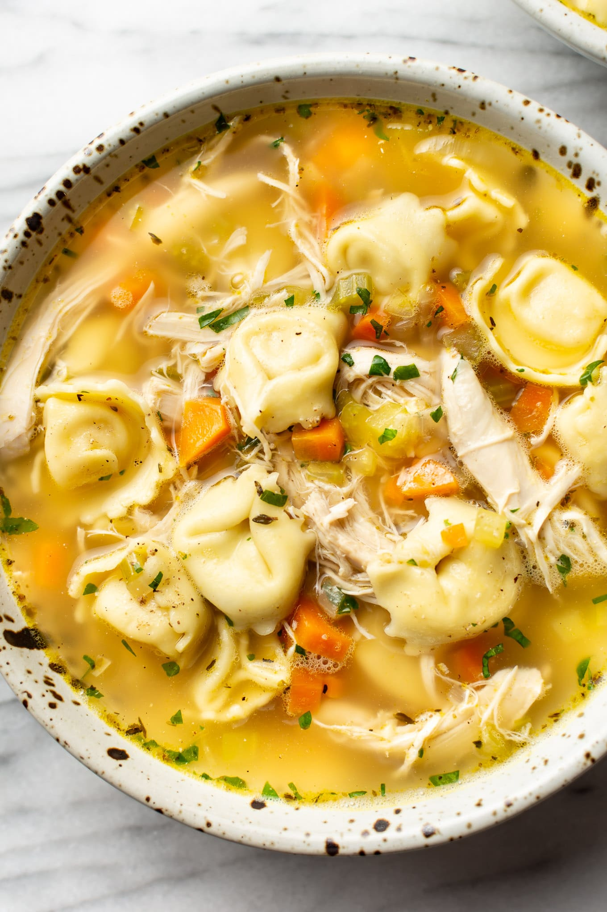

Go Back
An easy chicken tortellini soup recipe!

Description
Cook this super easy chicken tortellini soup in less than 15 minutes
Ingredients
- 1/2 (300g) pack Coles Chicken Tortellini
- 1 (450g) bag Coles Kitchen Chicken Style Soup Mix Kit
Steps
- In a medium sized saucepan add 1.25L (5 cups) of boiled water.
- Empty contents of bag and stock powder sachet into the saucepan. Bring to the boil.
- Once boiling, turn down to a gentle simmer and cook for 15 minutes or until vegetables are tender.
- While the soup is simmering, cook the chicken tortellini in a large pan of simmering salted water for 3 - 4 minutes until piping hot and the pasta is tender. Drain and add to a soup bowl.
- Once the soup is cooked, pour over the tortellini and serve.